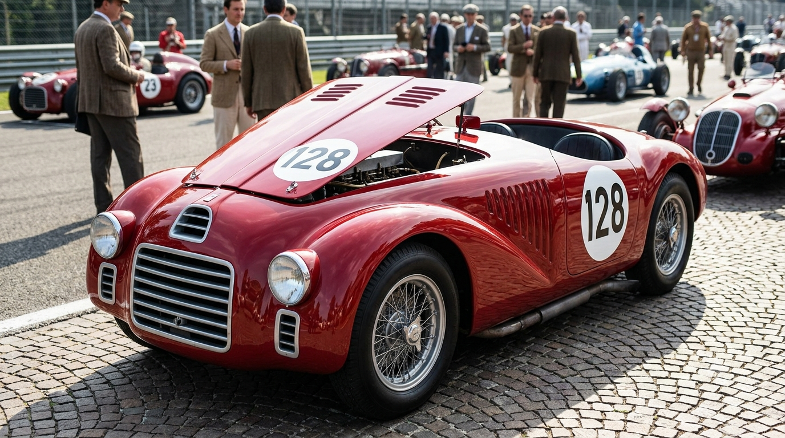

1947
Ferrari 125 S
O primeiro automóvel a carregar oficialmente o nome de Enzo Ferrari. Equipado com um motor V12 de 1,5 litro projetado por Gioachino Colombo, estreou no circuito de Piacenza e conquistou a primeira vitória da marca no Grande Prêmio de Roma no mesmo ano.